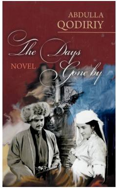

TDAbdulla Qodiriyning 'O'tkan kunlar' romanining ingliz tilidagi tarjimasi.
Ushbu asar Abdulla Qodiriyning mashhur 'O'tkan kunlar' tarixiy romanining ingliz tilidagi tarjimasidir. Unda XIX asr o'rtalaridagi o'zbek xalqining turmush tarzi, urf-odatlari hamda Otabek va Kumushning fojiali sevgisi tasvirlangan.